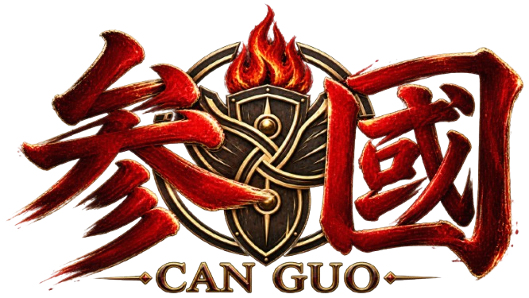

首頁
史實與演義
故事差異
群雄問答
人物圖鑑
招賢台
☰
全部
魏
蜀
吳
已解鎖 0 / 0
全部
R
SR
SSR
◇
沒有符合條件的武將
請切換陣營、稀有度，或調整搜尋關鍵字後再試一次。
◇ 群英列傳 ◇
×
角色名稱
三國人物｜群雄列傳
陣營
稀有度
定位：武將
史
史實記載
這裡是史實記載的描述...
演
小說演義
這裡是在演義小說中的描述...
◇
人物羈絆
◇
與此人物關係密切的角色
特殊羈絆
閉月連環・飛將之緣
你已發現貂蟬與呂布之間的特殊羈絆。
◇
提 示
提示內容
確 定